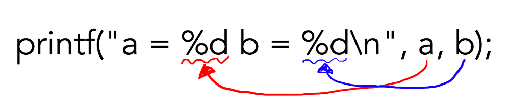

前回は、「出力」の方法を覚えたね!!
今回は、「変数」っていうものと、変数がもつ「型」について、紹介するよ!!
「変数」って聞いたことあるかな?
算数や数学で、「a + b = 10」みたいなのを、やったことがあると思う。
そのとき、「a」や「b」には色々な数字が入るよね!!
そんな感じで、数字を入れたり、プログラムの場合は文字を入れたりする「箱」のような役割をするものを、「変数」っていうよ。
実際に、変数を作って、使ってみよう!!
#include <stdio.h>
int main(){
// 変数の宣言
int a;
int b;
// 変数の中に、数字を入れる
a = 10;
b = 30;
// 出力してみる
printf("a = %d b = %d\n",a ,b);
return(0)
}「
a = 10 b = 30」って表示されたかな? 上からソースを読んでいってみよう
まず、「変数の宣言」をしているね。「宣言」とは、「変数を作る」ことを意味するよ。用語なので覚えておこう。
今回の場合、例えば4行目は、「int型」の「a」という変数を宣言する、という意味になるよ。
変数は、C言語だと、宣言する場所が決まっていて、「一番最初」に宣言しなければならないよ。
エラーが出たりするわけではないけれど、そういうルールだから覚えておこう。
変数名は、「
a」以外にも、アルファベットなら基本的に自由につけることができるよ。ただし、同じ名前の変数を複数個宣言することはできないから注意してね!!
「[型の名前] [変数名] 」で、どんな型でも宣言することができるよ!!
「型」については、あとで詳しく説明るすよ!!
#include <stdio.h>
int main(){
/* 変数の宣言 */
// 普通に宣言
int a;
// まとめて宣言
int b,c;
/* こんなこともできる */
// 数字を含む名前
int num1;
int person1, person2;
// _を含む
int num_max, num_min;
/* これはできない */
// 同じ名前のものを宣言
int a;
int a;
// 1文字目が数字
int 1st, 2nd, 3rd;
// 予約語
// 関数名や、型名等で使われている名前と同じものは使うことができない
int printf;
int int;
// アルファベット、数字、「_」以外の文字
int あ;
return(0);
}次に、「変数の中に数字を入れる」って書いてあるね。
宣言された変数の中には、最初何が入っているか分からないんだ。そのまま出力をしてしまったり、何か操作をしてしまうと、予期しない動作の原因になってしまうことがあるから、注意しようね。
数字を代入するには、「
=」を使えばいいみたいだね。
「
=」は、「右から左」へ動作するよ。だから、数学みたいに、反対に書いても同じ意味にはならないんだ。
#include <stdio.h>
int main(){
// 変数の宣言
int a;
int b;
// これはできる
// aに10が入る
a = 10;
// これはできない
// 30にbを入れる、という意味になるが、それはできない
30 = b;
// こんなこともできる
// 左から右へ動作するので、まずbに50が入る
// 次に、aにbが入る bは50が入っているので、aにも50が入る
a = b = 50;
return(0);
}最後に、変数の出力について説明するよ
出力に「
printf」を使う部分に関しては代わりがなさそうだね。
でも、「
%d」っていう、新しいものが出てきているよ。これの意味を説明していくね!
「
%d」は、「指定子」っていうよ。
指定子は、変数の出力だけでなく、入力の時にも使うよ。(別のところで詳しくやるよ)
型によって指定子は異なるから、よく使うものだけでも覚えておくといいね
また、型によって格納(変数の中に値を入れること)できるものが違ったり、同じ物を入れる型でも扱える数の範囲が違うよ。例えばint型は、整数しか入れることはできないんだ。実数を入れる場合は、別の型を使う必要があるよ。下で詳しく説明するね。
「
printf」で使われている、「
%d」や「
a, b」にいて説明するよ。
まず、最後の方に書いてある「
a, b」ってなんだろう。
これは、自分が宣言した、変数の名前だよ。変数名は基本的に自由に決めることができるので、自分で決めた変数名に応じて、ここに書くことは変わっていくよ。
「
%d」について説明するよ。下の図のようになっているんだ。

1つ目の「
%d」には、1つ目の変数が、2つ目には2つ目がってなっているよ。
もちろん、3つ目以降も同じように続いていくよ。ただし、変数の型に合わせて、指定子も正しいものを使わないと、表示がおかしくなることがあるから気をつけようね!
変数がもつ型には、さっき使った「int型」以外にも、たくさんの型があるよ。
全部は説明できないけど、競プロでよく使う型と指定子を説明するね。
| 型名 | 指定子 | 最大値・最小値大体の大きさ(目安) | 入れれるもの |
| int | %d | -21億〜21億 | 整数 |
| long long | %lld | -322京〜322京 | 整数 int型に収まらない場合に使う |
| char | %c | -128〜127 | 文字を入れて使う(別のところで詳しくやるよ) |
| float | %f | ±1.2×10 -38〜±3.4×10 38 | 実数を入れて使う |
| double | %lf | ±2.2×10 -308±1.8×10 308 | 実数を入れて使う |
整数を入れる型は、int型とlong long型がある
大体の場合、int型で済むけれど、long long型にしないと治らない値を使う場合もあるので、覚えておこう。扱える値の範囲が大きいからって、全部long long型を使うと、メモリの消費が激しいので、やめようね。
文字を入れる型については、別のところで詳しくやるよ。
実数を扱う型は、複雑だよ。
float型とdouble型では、コンピュータ内部での数の表し方そのものが違うよ。
また、コンピュータは小数点を扱うのが苦手で、例えば0.1は無限小数扱いになってしまっているんだ。そのため、誤差が発生しやすくて、危険なこともあるよ。
扱う数が、整数だけの場合は、int型やlong long型を使おうね!!
また、全体の幅や、実数を扱う型の場合は小数点以下の桁数を指定することができるよ。
「[幅].[小数点以下桁数]」で、指定することができるよ。
下にサンプルを書いてみたから、試してみてね。
#include <stdio.h>
int main(){
// 変数宣言
int a = 10;
int b = 100;
double pi = 3.1415;
double num = 123.4567;
/** 出力 **/
// 桁数が揃って表示されるよ
printf("%5d\n%5d\n", a, b);
// 小数点以下の桁数も指定できるよ
printf("%.2lf\n", pi);
// 全体の幅と桁数を両方揃えることもできるよ
printf("%5.2lf\n%5.2lf\n", pi, num);
/** こんなこともできるよ **/
// 空白を全部ゼロで埋める
printf("%05d\n", 321);
// 左詰め
printf("[%-5d]\n", 456);
// 符号表示
printf("%+5d\n", 789);
return(0);
}